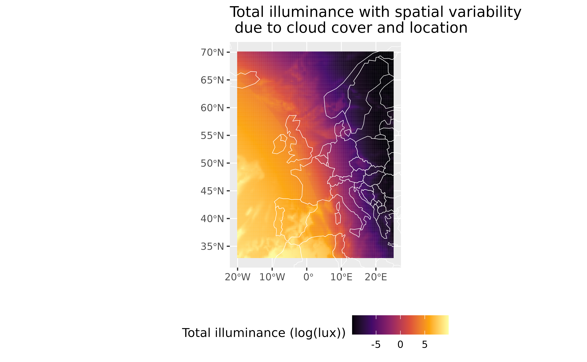

skylight advanced
Koen Hufkens
2023-04-29
Source:vignettes/skylight_advanced.Rmd
skylight_advanced.RmdCloud cover correction
The original implementation of the software allows for a correction of illuminance based upon three cloud cover conditions. However, this is in all practical sense a simple scaling of the data (see Janiczek and DeYoung 1987). You can either apply this scaling factor, a division by a number greater than 1 using the function itself, or apply it post-hoc on the returned values. Below I show an example routine to use the internal scaling, using ERA5 total cloud cover (tcc) data.
Downloading cloud cover data
To provide our analysis with cloud cover data I rely on the BlueGreen
Labs ecmwfr
package. So, I first query some total cloud cover data (0 - 1) covering
most of Europe.
library(ecmwfr)
request <- list(
product_type = "reanalysis",
format = "netcdf",
variable = "total_cloud_cover",
year = "2021",
month = "02",
day = "01",
time = c("00:00", "01:00", "02:00", "03:00", "04:00",
"05:00", "06:00", "07:00", "08:00", "09:00",
"10:00", "11:00", "12:00", "13:00", "14:00",
"15:00", "16:00", "17:00", "18:00", "19:00",
"20:00", "21:00", "22:00", "23:00"),
area = c(70, -20, 33, 25),
dataset_short_name = "reanalysis-era5-single-levels",
target = "era5.nc"
)
wf_request(
user = "xxxx",
request = request,
transfer = TRUE
)Downloaded data can be read with the terra package. The
above downloaded data is included as a demo data set in the package. You
can therefore use this included data in this workflow. Check out the
ecmwfr package to download your own custom data.
#> terra 1.7.29
library(terra)
# read in data
era5 <- terra::rast(system.file(package = "skylight", "extdata/era5.nc"))
# use this command when downloading the data yourself
# era5 <- terra:rast(file.path(tempdir(),"era5.nc"))However, the spatial format needs to be converted to a data frame for
use with the skylight package.
library(dplyr)
#>
#> Attaching package: 'dplyr'
#> The following objects are masked from 'package:terra':
#>
#> intersect, union
#> The following objects are masked from 'package:stats':
#>
#> filter, lag
#> The following objects are masked from 'package:base':
#>
#> intersect, setdiff, setequal, union
# create a data frame with values
df <- era5 |>
as.data.frame(xy = TRUE) |>
rename(
longitude = "x",
latitude = "y"
)
# add the original time stamp
df$date <- time(era5)
print(head(df))
#> longitude latitude tcc date
#> 1 -20.00 70 0.9886775 2021-02-01 17:00:00
#> 2 -19.75 70 0.9975280 2021-02-01 17:00:00
#> 3 -19.50 70 0.9941709 2021-02-01 17:00:00
#> 4 -19.25 70 0.9639876 2021-02-01 17:00:00
#> 5 -19.00 70 0.9417698 2021-02-01 17:00:00
#> 6 -18.75 70 0.9416477 2021-02-01 17:00:00
library(skylight)
# calculate sky illuminance values for
# a single date/time and location
df <- df |>
mutate(
# values of cloud cover lower than
# 30% are considered clear conditions
# for the skylight model - adjust tcc values
tcc = ifelse(tcc <= 0.3, 1, tcc),
# rescale total cloud cover between 1 - 10
# the acceptable range for skylight's
# sky_condition parameter
sky_condition = scales::rescale(df$tcc, to = c(1,10))
)
# pipe into skylight
df <- df |> skylight()
print(head(df))
#> longitude latitude tcc date sky_condition sun_azimuth
#> 1 -20.00 70 0.9886775 2021-02-01 17:00:00 9.898097 229
#> 2 -19.75 70 0.9975280 2021-02-01 17:00:00 9.977752 229
#> 3 -19.50 70 0.9941709 2021-02-01 17:00:00 9.947538 229
#> 4 -19.25 70 0.9639876 2021-02-01 17:00:00 9.675888 229
#> 5 -19.00 70 0.9417698 2021-02-01 17:00:00 9.475928 230
#> 6 -18.75 70 0.9416477 2021-02-01 17:00:00 9.474829 230
#> sun_altitude sun_illuminance moon_azimuth moon_altitude moon_illuminance
#> 1 -3.983115 2.511910 2 -17.60419 5.917033e-13
#> 2 -4.047531 2.332974 3 -17.60053 5.892869e-13
#> 3 -4.112172 2.190011 3 -17.59649 5.936460e-13
#> 4 -4.177039 2.106323 3 -17.59205 6.132194e-13
#> 5 -4.242130 2.011334 3 -17.58723 6.294024e-13
#> 6 -4.307443 1.880456 4 -17.58203 6.329976e-13
#> moon_fraction total_illuminance
#> 1 81.93127 2.511960
#> 2 81.93127 2.333024
#> 3 81.93127 2.190061
#> 4 81.93127 2.106374
#> 5 81.93127 2.011387
#> 6 81.93127 1.880509I can now plot the sky illuminance as corrected for cloud cover using the internal scaling factor. Keep in mind that this is a rather ad-hoc solution. For proper results external empirical relationships should be established between the model response and measured illuminance values under varying cloud cover conditions.
library(ggplot2)
library(rnaturalearth)
# country outlines
outlines <- rnaturalearth::ne_countries(returnclass = "sf")
ggplot(df) +
geom_tile(
aes(
longitude,
latitude,
fill = log(total_illuminance)
)
) +
scale_fill_viridis_c(
option = "B",
name = "Total illuminance (log(lux))"
) +
geom_sf(
data = outlines,
colour = "white",
fill = NA
) +
coord_sf(
xlim = c(-20, 25),
ylim = c(33, 70)
) +
labs(
title = "Total illuminance with spatial variability\n due to cloud cover and location",
y = "",
x = ""
) +
theme(
legend.position = "bottom"
)